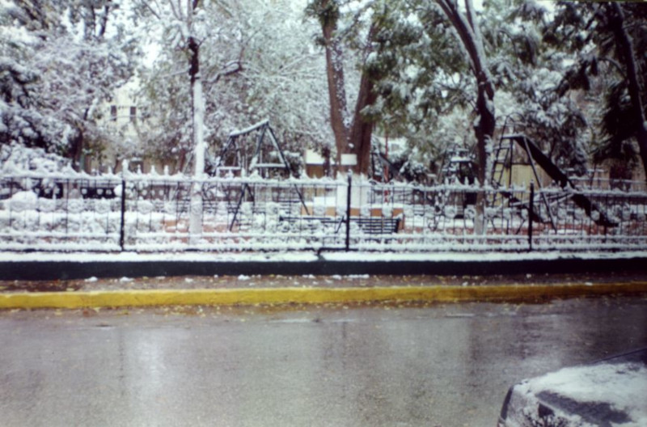
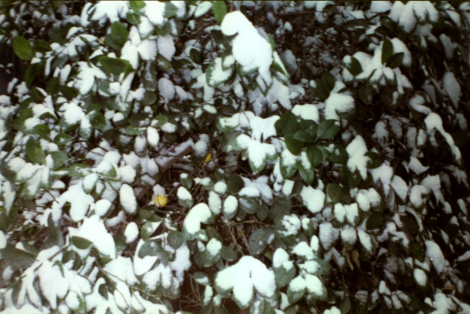
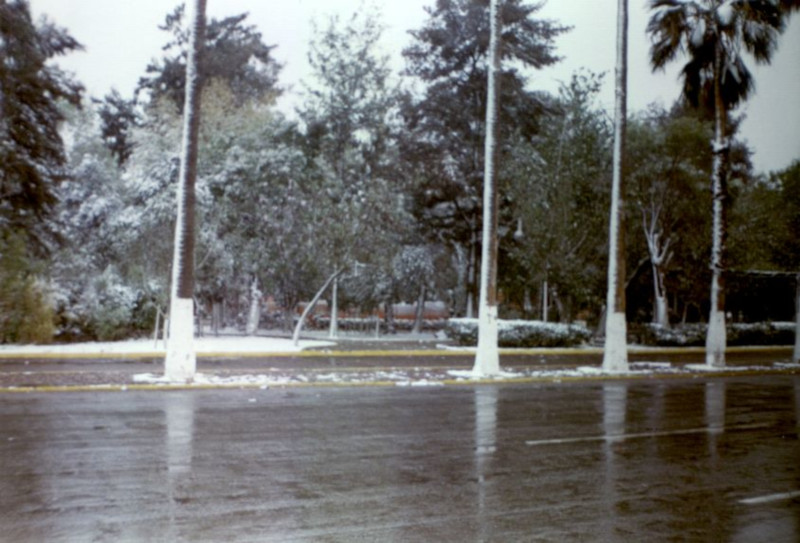

La noche del 11 de diciembre de 1997, como las 9 pm nos encontrábamos Guillermo y yo (en aquel entonces mi novio), tratando de no congelarnos dentro del viejo auto de mi papá (sin calefacción). Permanecíamos con las manos entrelazadas, hablando trivialidades, mirándonos a los ojos, como si nada pasara. No nos podíamos ver a diario, y ni aquel frillazo podía impedir que pasáramos un momento juntos, a pesar de que cada vez más se sentía el descenso de la temperatura. En el parabrisas se veía como el viento estrellaba diminutas gotas de agua, y por un momento se me ocurrió: ¿será que irá a nevar? ... ¡¡No!! Eso aquí nunca pasa...
La madrugada del viernes 12 de diciembre como a las cinco de la mañana escuché ruidos inusuales en la casa. La tele se escuchaba prendida, sonaban trastes en la cocina, y la chimus (QEPD) arañaba la puerta de mi cuarto para que la dejara entrar. Intrigada, me levanté a ver. ¿Que pasó? ¿Por que no fuiste a trabajar? pregunté “¡Está nevando!”, dijo mi papá. Ese día la ciudad se paralizó, no hubo clases, muchos negocios no abrieron, había pocos camiones y muchos carros no arrancaron. ¡Oh, que emoción! ¡Es la segunda vez en mi vida que veo nevar! Inmediatamente corrí por mi cámara y todo el día la pasé en la calle tomando fotos a diestra y siniestra, quien sabe cuando volveré a ver esto pensaba.
Hoy exactamente diez años después, recuerdo ese día con gran añoranza. Veo aquellas fotos y me parece imposible que haya pasado una década, y aún me pregunto: ¿Cuando volveré a ver nevar aquí en la laguna?... Aunque no descarto la posibilidad, creo que cada vez será menos probable. En este momento son las 11 de la mañana y en mi lugar de trabajo el aire acondicionado está prendido tratando de mantener la temperatura a 25°C.
¡Cuanto contraste! Este invierno romperá el récord con menos días fríos o más días calientes, como sea, el caso es que por aquellos años el ecologito un profe del tec que así le decíamos, ya advertía tal como un fanático religioso anuncia la llegada del fin del mundo, que todo eso del Global Warming nos alcanzaría prolongando los veranos cada vez más, haciendo casi imperceptibles los otoños, y los inviernos apenas si tendrían los suficientes días fríos, para hacernos sentir el espíritu navideño.






 Hielito de Limón
Hielito de Limón